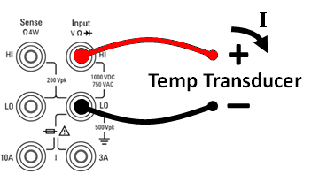
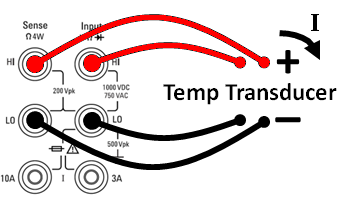
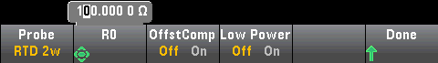
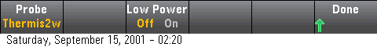

This section describes general temperature measurement configuration information. For a detailed tutorial on temperature measurements, refer to Keysight Application Note 290 Practical Temperature Measurements available at www.keysight.com.
This section describes general temperature measurement configuration information. For a detailed tutorial on temperature measurements, refer to Keysight Application Note 290 Practical Temperature Measurements available at www.keysight.com.This topic applies only to 34465A/70 DMMs. For temperature measurements using the 34460A/61A, see Temperature (34460A and 34461A).
This section describes how to configure temperature measurements from the front panel. Temperature measurements require a temperature transducer probe. The supported probes are 2-wire and 4-wire RTDs, 2-wire and 4-wire thermistors (5 kΩ 44007 type, see Thermistor Requirements), and type E, J, K, N, R, or T thermocouples.
This section describes general temperature measurement configuration information. For a detailed tutorial on temperature measurements, refer to Keysight Application Note 290 Practical Temperature Measurements available at www.keysight.com.
Step 1: Configure the test leads as shown.
| 2-wire Temperature: |
|
 |
|
4-wire Temperature: |
|
 |
Step 2: Press [Temp] on the front panel.
Step 3: The Aperture NPLC softkey is selected by default. Use the up/down arrow keys to specify integration time in power-line cycles (PLCs) to use for the measurement . 1, 10, and 100 PLC provide normal mode (line frequency noise) rejection. Selecting 100 PLC provides the best noise rejection and resolution, but the slowest measurements:
To set integration time precisely, instead of using PLCs, press Aperture Time and use the left/right up/down arrow keys to specify integration time in seconds. For Aperture Time, you can specify from 200 µs (20 µs with the DIG option) to 1 s integration time (2 µs resolution):
Step 4: Use the Units softkey to display temperature in degrees Celsius, degrees Fahrenheit, or Kelvin.
Step 5: Press Probe Settings, the default probe settings are:
Step 6: To select another probe type, press Probe and press one of the softkeys:
Additional settings for each probe type are described in the sections below.
The RTD 2w or RTD 4w probe types allow you to set R0 and to enable/disable offset compensation and/or the low-power mode:

R0: R0 is the nominal resistance of an RTD at 0 °C. Default 100 Ω
OffstCompEnables or disables offset compensation. Offset compensation removes the effects of small dc voltages in the circuit being measured. The technique involves taking the difference between two resistance measurements, one with the current source set to the normal value, and one with the current source set to a lower value. Enabling Offset Compensation approximately doubles the reading time.
Low Power: Disables (Off) or enables (On) low power measurements. The low power mode sources less test current per measurement range than is normally sourced for standard resistance measurements, to reduce power dissipation and self-heating in the probe.
Press Done to return to the main temperature menu.
For the RTD 2w probe type, an additional Auto Zero setting is available:
Auto Zero: Autozero provides the most accurate measurements, but requires additional time to perform the zero measurement.With autozero enabled (On), the DMM internally measures the offset following each measurement. It then subtracts that measurement from the preceding reading. This prevents offset voltages present on the DMM’s input circuitry from affecting measurement accuracy. With autozero disabled (Off), the DMM measures the offset once and subtracts the offset from all subsequent measurements. The DMM takes a new offset measurement each time you change the function, range, or integration time. ( There is no autozero setting for 4-wire measurements.)
The Thermis2w or Thermis4w probe types allow you to enable/disable low power mode:

Low Power: Disables (Off) or enables (On) low power measurements. The low power mode sources less test current per measurement range than is normally sourced for standard resistance measurements, to reduce power dissipation and self-heating in the probe.
Press Done to return to the main temperature menu. For the Thermis2w probe type, an additional Auto Zero setting is available:
Auto Zero: Autozero provides the most accurate measurements, but requires additional time to perform the zero measurement.With autozero enabled (On), the DMM internally measures the offset following each measurement. It then subtracts that measurement from the preceding reading. This prevents offset voltages present on the DMM’s input circuitry from affecting measurement accuracy. With autozero disabled (Off), the DMM measures the offset once and subtracts the offset from all subsequent measurements. The DMM takes a new offset measurement each time you change the function, range, or integration time. ( There is no autozero setting for 4-wire measurements.)
The DMM converts the measured thermistor resistance to temperature using the Steinhart-Hart thermistor equation:
1⁄T = A + B (Ln(R)) + C (Ln(R))3
Where:
A, B, and C are constants provided by the thermistor manufacturer and derived from three temperature test points.
R = Thermistor resistance in Ω.
T = Temperature in degrees K.
Important: Use only a 5 kΩ 44007-type thermistor. This type thermistor has constants of A = 1.285e-3, B = 2.362e-4, C = 9.285e-8. Using an incorrect type of thermistor can result in errors greater than 20 °C for a temperature being measured of 100 °C.
For a detailed tutorial on temperature measurements, refer to Keysight Application Note 290 Practical Temperature Measurements available at www.keysight.com.
The TCouple probe types allows these settings:
Type: Select the type of thermocouple. Supported types are J (default), K, E, T, N, or R
Reference: Thermocouple measurements require a reference junction temperature. You can input a known fixed reference junction temperature (typically used for external reference junctions) or use the internally measured temperature of the front terminals as the reference junction temperature. Select internal or fixed reference.
Important: Since the internal reference temperature is the temperature of the front connections, use of the rear connections with the selection of the internal reference junction will have an unknown error with no specified performance and is not recommended.
Offset Adjust: Allows you to make minor temperature adjustments to correct for the differences between the DMM internal temperature measurement of the front connection and the actual temperature of the measurement terminals. When you select the internal reference junction, the internal temperature measurement of the front terminals plus the specified offset value is used as the reference junction temperature. For example, if the measured internal temperature is +20.68 °C and the specified offset is +5 °C, the artificial cold junction mathematics uses the sum of the two values. Keysight recommends that the offset be left at 0 unless metrology has indicated otherwise.
Fixed Offset: When you select the external reference junction, you must specify the reference junction temperature in degrees Celsius. Enter a value from -20 °C to +80 °C. Default: 0 °C. For example, to set the fixed reference temperature to +23.36 °C:
Press Done to return to the main temperature menu showing additional settings for thermocouple measurements:
Auto Zero: Autozero provides the most accurate measurements, but requires additional time to perform the zero measurement.With autozero enabled (On), the DMM internally measures the offset following each measurement. It then subtracts that measurement from the preceding reading. This prevents offset voltages present on the DMM’s input circuitry from affecting measurement accuracy. With autozero disabled (Off), the DMM measures the offset once and subtracts the offset from all subsequent measurements. The DMM takes a new offset measurement each time you change the function, range, or integration time. ( There is no autozero setting for 4-wire measurements.)
Open Check: Disables or enables the thermocouple check feature to verify that your thermocouples are properly connected for measurements. When enabled, the instrument measures the resistance after each thermocouple measurement to ensure a proper connection. If an open connection is detected (greater than 5 kΩ on the 10 kΩ range), the instrument reports an overload condition.
For more information about making temperature measurements refer to Keysight Application Note 290 Practical Temperature Measurements available at www.keysight.com.